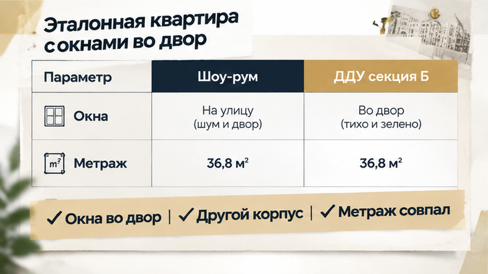
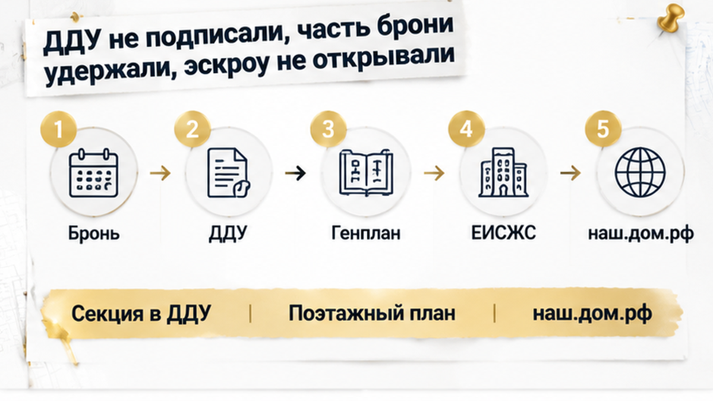
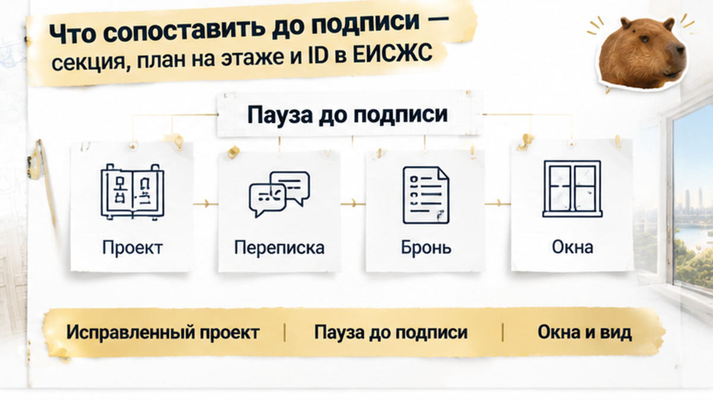

За 5 дней до подписания ДДУ семья обнаружила в проекте договора северную секцию вместо южной — покупать предлагали квартиру с окнами на соседний корпус, а не во двор. Площадь и этаж совпадали, поэтому на первый взгляд всё было на месте. В шоу-руме запомнились большие окна и солнечный свет, а в заявке на бронь остались слова «солнечная сторона». Теперь на экране ноутбука стояла секция B, и менеджер объяснял разницу спокойно: «Та же цена, просто другой подъезд». Только семья выбирала не подъезд по той же цене, а квартиру, в которой собиралась жить.
Я, Святослав Шакин, риэлтор The Риэлтор в Тюмени: в Telegram разбираю, где в документах на новостройку расходятся обещания и сама покупка. В MAX можно прислать вопрос по конкретному объекту — до того, как договор окажется на подписи.
В офис продаж семья приехала смотреть квартиру, которую уже мысленно выбрала. В демонстрационной квартире было светло, окна выходили во двор. Покупатели представляли обычную жизнь: где будет детская, куда поставить рабочий стол, каким окажется утро у окна.
Их можно понять. Когда менеджер вместе называет этаж, площадь и южную сторону, это слышится как описание одной квартиры. Не как набор отдельных достоинств жилого комплекса, которые потом ещё предстоит собрать в конкретном предложении. Тем более слова о солнечной стороне были не только в разговоре: они остались в заявке на бронь и презентации.
Но у шоу-рума своя задача — показать пространство и помочь представить будущий дом. Он может находиться в другой секции или на другом этаже. Свет, который покупатель видит здесь, не переезжает вместе с выбранной отделкой в любую квартиру такой же планировки.
Обычный покупатель смотрит: «Вот так будет у нас». Я в такой момент отделяю показ от покупки: где находится демонстрационная квартира, а где — та, которую бронируют? Это не придирка к красивому офису продаж. Нужно связать увиденное с конкретным местом в доме, иначе каждый участник разговора может понимать под «этой квартирой» своё.

Семья выбирала не просто метры. Для неё в покупку входили дневной свет, направление окон и двор перед ними. В таблице с ценами эти вещи легко потерять, а в повседневной жизни они никуда не исчезают: за окном будет именно то, что стоит напротив конкретной квартиры.
Отсюда и разница между «планировка понравилась» и «мы выбрали объект». Похожая комната может быть в нескольких частях дома. Мебель расставится одинаково, зато окна окажутся в другом окружении. Совпадение размеров ещё не означает, что покупателю предлагают то, ради чего он внёс бронь.
При этом северная сторона сама по себе не делает квартиру плохой. Здесь вообще не нужно спорить, кому сколько солнца нравится. Важнее другое: семья вправе выбирать по своим условиям, а не соглашаться на чужой вариант только потому, что метраж подходит.
Такое расхождение бывает не только с окнами. В разборе земли под жилым комплексом тоже пришлось отделять обещанное при бронировании от записанного в документах. Здесь эту границу обозначил проект ДДУ: красивое впечатление от показа впервые пришлось сверить с точным расположением будущей квартиры.
Проект договора пришёл за пять дней до подписания. Семья открыла его на ноутбуке: площадь знакомая, этаж тоже. На этих двух цифрах можно было успокоиться и читать дальше — про оплату, сроки и передачу ключей. Но в описании квартиры стояла секция B.
Рядом положили заявку на бронь и презентацию. Там — «солнечная сторона», ради которой в том числе и выбирали квартиру. По расположению объекта в проекте выходило другое: север, окна на соседний корпус. Совпали общие цифры, а место квартиры в доме — нет.
Вот где обычный покупатель и человек, который проверяет сделку, смотрят на документ по-разному. Покупатель узнаёт метраж и этаж: «Да, это наше». Я на этом проверку не заканчиваю: нужны секция, условный номер и положение квартиры на плане. Не потому, что в каждой строчке обязательно подвох. Просто именно эти обозначения позволяют отличить выбранную квартиру от похожей.
Условный номер здесь — не пустая формальность. Его нужно связать с конкретным помещением на этаже, а сам этаж — с нужной секцией дома. Иначе можно внимательно прочитать договор, проверить сумму и всё равно не заметить, что подписываешься на соседний вариант. В тексте он будет выглядеть почти знакомым.
Поэтому вопрос к менеджеру был уже не о том, насколько удачно устроен шоу-рум. Нужно было разобраться, какую квартиру предлагают закрепить договором и почему она не совпадает с обсуждавшейся. До подписи это расхождение ещё можно разобрать, не соглашаясь на замену. Ждать приёмки, чтобы посмотреть из настоящего окна, для такого решения слишком поздно.
Ответ менеджера звучал успокаивающе: «Та же цена, просто другой подъезд». Слово «просто» делает изменение небольшим, будто речь только о двери, через которую заходить домой. Но вход в подъезд — не единственное, что меняется вместе с расположением квартиры.
Цена отвечает на вопрос, сколько заплатить. Она не отвечает на вопрос, что именно покупаешь. За одинаковую сумму могут предложить две квартиры с одинаковым метражом, но одна будет смотреть во двор, другая — на соседний корпус. Для семьи, которая выбирала свет и вид, это не равноценность по умолчанию.
При этом северные окна сами по себе не делают квартиру плохой или незаконной. Есть требования к солнечному освещению — инсоляции, и проект должен им соответствовать. Но соответствие нормам и желание покупателя жить с окнами на юг — разные вещи. Первое не отменяет второе, а фраза «всё по нормам» не заменяет согласия семьи.
Не стоит и приписывать шоу-руму больше, чем он может показать. В нём удобно оценивать размеры комнат, планировку, отделку. Но свет и окружение за окном привязаны к его месту в доме. Перенести их в другую секцию вместе с похожей планировкой не получится.
В разборе обещанной собственности на землю под ЖК тоже пришлось отделять слова в офисе от документов проекта. Здесь принцип тот же: сначала понять, что предлагают на подпись, затем решить, подходит ли это покупателю. Другая квартира может устроить семью — но только если семья сама её выбрала. Не потому, что цена осталась прежней и день подписания уже близко.
Семья отказалась подписывать ДДУ на предложенную квартиру. Не стала соглашаться ради того, чтобы сохранить бронь, и оставила проект договора неподписанным. Счёт эскроу для этой сделки не открывали, деньги за квартиру туда не переводили.
Но выйти совсем без потерь не получилось: часть брони удержали. Неприятный итог, особенно когда покупку уже представляли решённым делом. Только теперь выбор был не между двумя красивыми картинками, а между потерей части брони и покупкой квартиры, на которую семья не соглашалась.
Бронь и деньги за квартиру — не одно и то же. У бронирования отдельный договор, свои сроки и условия отказа. Поэтому обещать «всё обязаны вернуть» здесь нельзя: нужно читать, за что внесена сумма и на каких условиях её удерживают. Сам факт отказа от ДДУ ещё не даёт готового ответа по возврату брони.
Если в шоу-руме солнце, а в ДДУ — северная секция за ту же цену, вы бы подписали, чтобы не потерять бронь, или сразу ушли?

Я бы начал не с вопроса «почему у вас тут север», а с простого сравнения документов. Рядом — заявка на бронь, презентация или переписка, проект ДДУ и поэтажный план. В них нужно найти одну и ту же квартиру: секцию, подъезд, условный номер, комнаты и место на этаже. Потом посмотреть по генплану, куда выходят окна и что находится перед ними. Знакомого метража для этого мало.
Дом и застройщика проверяют через наш.дом.рф — портал Единой информационной системы жилищного строительства, ЕИСЖС. Данные проектной декларации на дату заключения ДДУ нужно сопоставить с договором. С 2025 года для квартир в строящихся домах внедряется уникальный ID объекта: его тоже стоит сверить с данными проекта ДДУ. Но ID не расскажет за вас всё про окна, а сторона света на портале есть не всегда. Здесь всё равно нужны генплан и план этажа.

Если документы расходятся, следующий шаг — попросить исправленный проект или письменное объяснение, какую квартиру предлагают купить. Переписку и презентацию сохранить: они показывают, о чём договаривались, хотя точного описания объекта в ДДУ не заменяют. Похожая развилка была в истории, где в брони обещали газ в 2026 году, а в декларации стоял 2028-й. Разбирать обещание и условия брони пришлось отдельно — до основной сделки.
В Telegram разбираю такие расхождения человеческим языком: что показали, что написали и с чем покупатель в итоге соглашается. В MAX можно задать вопрос по своей новостройке до подписи.
Потерянная часть брони не стала приятной мелочью только потому, что сделку остановили. Но спасать её, соглашаясь отправить миллионы на эскроу за неподходящую квартиру, семья не стала. До подписи у покупателя остаётся право на паузу: получить понятные документы и только потом решить, нужны ли ему именно эти окна, этот вид и эта квартира.